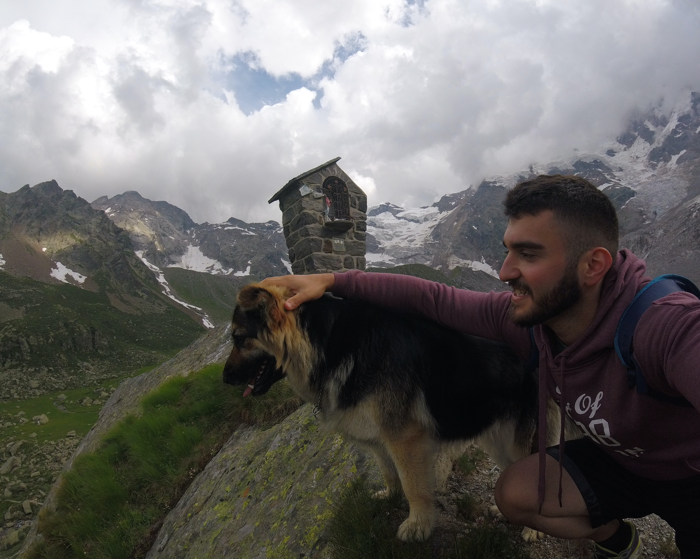

Ph.D. in Natural Sciences
Thesis: "Ecology and evolution of the invasive spider Mermessus trilobatus in Europe." Supervisor: Prof. Dr. Martin Entling

Postdoctoral Researcher | Behavioural Ecology & Molecular Evolution
Mainz, Germany | nijat.nariman@gmail.com
ORCID · Links · Google Scholar
I investigate the behavioural ecology and evolutionary dynamics of invasive species and agricultural pests using integrative approaches spanning genomics, chemical ecology, trait manipulation and experimental evolution. My research addresses fundamental questions about dispersal behaviour, reproduction, insecticide resistance evolution, and predator–prey interactions, including insights relevant to pest management. Current work focuses on how selection pressures shape life-history traits and host plant adaptation in the Colorado potato beetle. Future research will explore the role of microbiomes and molecular mechanisms in mediating resistance evolution and invasion success.
Thesis: "Ecology and evolution of the invasive spider Mermessus trilobatus in Europe." Supervisor: Prof. Dr. Martin Entling
Thesis: "Effects of personality and chemical cues on non-consumptive effects of ants on spiders."
"Genetic architecture of an invasion (GAI): Identifying genomic regions associated with high dispersal and fecundity in an invasive spider."
First-Author Publications
Co-Authored Publications
Ad hoc reviewer (2021–present) for 15+ international journals across ecology and evolution.
Email: nijat.nariman@gmail.com
Location: Mainz, Rheinland-Pfalz, Germany